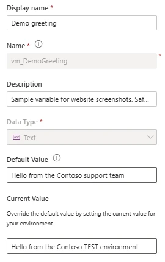

- Power Automate
- Level 6 · ALM and governance · 3 of 7
Environment variables
In development a flow posts to the test site and emails the test team; in production it must use the real ones. An environment variable holds the value outside the flow, so the flow never changes.
Default value and current value
WhatA solution component with a default value and an optional per-environment current value.
WhyNo editing flows after each deployment, and no wrong site in production.
DemoA greeting that says which environment it's in.
Which value does the flow get?
Does this environment have a current value?
Yes
Current value wins: Hello from the Contoso TEST environment
No
Default value: Hello from the Contoso support team

Reading it in a flow


@parameters('Demo greeting (vm_DemoGreeting)')| Piece | What it does |
|---|---|
parameters('Display name (schema name)') | Environment variables are read as flow parameters; pick them from dynamic content. |
The same Compose uses workflow()?['tags']?['flowDisplayName'] for the flow's own name, handy in alerts.
Data types
| Type | Use for |
|---|---|
| Text | Site addresses, emails, messages |
| Decimal number | Thresholds, limits |
| Yes/No | Feature flags |
| JSON | A group of settings in one variable (Level 8) |
| Data source | A SharePoint site or list picked from a connector |
| Secret | Passwords and keys, stored in Azure Key Vault |
Watch out
- Values are read when a run starts; a change doesn't affect runs already in progress.
- Decide before export whether the current value travels with the solution.
New to this? Start from the basics optional
Hard-coding: typing a value straight into an action.
Schema name: the fixed internal name, with the publisher prefix.
Common mistakes
- Exporting Dev's current value, which then overrides production.
- Passwords in a Text variable.
- Hard-coded site URLs alongside variables.